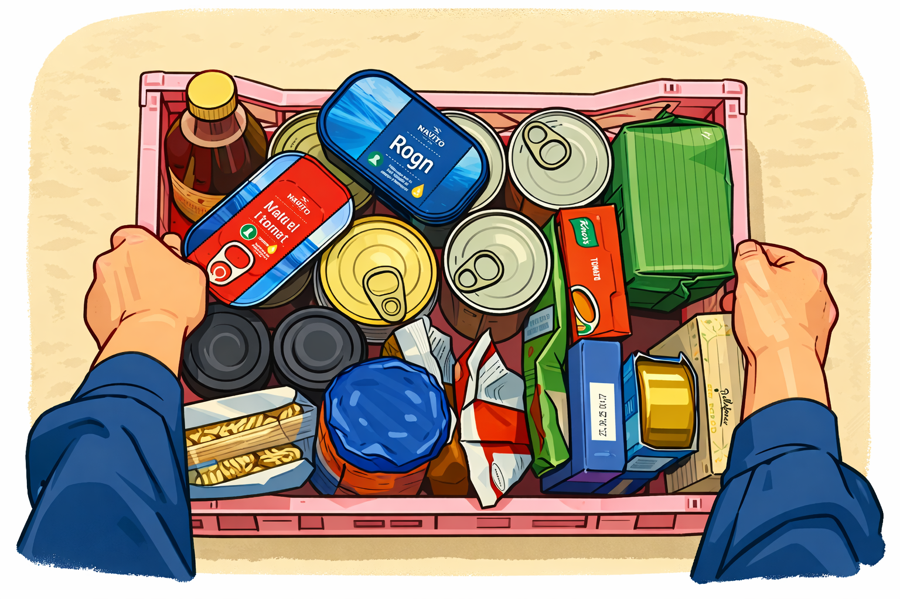
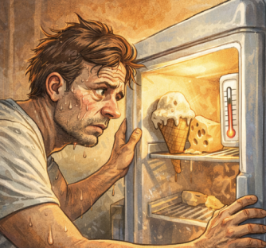
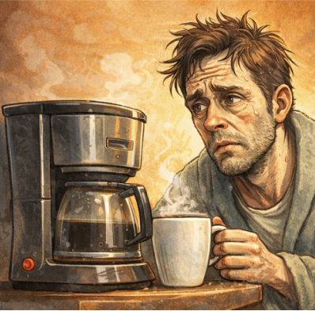

ER DU FORBEREDT?

Se pakkeguideHVAD GØR DU?

Se pakkeguide
I det øjeblik strømmen forsvinder, sker der noget brutalt: køleskabet mister hele sin personlighed. Det går fra at være hjemmets kolde helt til bare at være et skab med en dyr fortid. Og selvom det kan føles fristende at åbne lågen hvert andet minut for at “tjekke situationen”, gør du det kun værre. Kulden forsvinder, maden får det sværere, og du ender i en meget personlig konflikt med en halvvarm yoghurt.
Det største problem under en strømafbrydelse er ikke nødvendigvis selve strømmen. Det er dig, der står og åbner køleskabet konstant. Hver gang døren åbnes, slipper kulden ud, og temperaturen stiger. Så lad være med at lave sightseeing i pålægsskuffen. Du finder ikke nye svar derinde.
Når kulden forsvinder, begynder nogle madvarer hurtigt at opføre sig mistænkeligt. Mælk, rester, kød og pålæg er ikke typerne, der holder hovedet koldt under pres. De mere robuste varer kan klare sig lidt længere, men det er stadig ikke nu, du skal begynde at stole blindt på lugte, du “tror er okay”.
Fryseren klarer sig som regel bedre end køleskabet, især hvis den er godt fyldt. Den holder på kulden længere og kæmper en stille, heroisk kamp for dine pomfritter og frostpizzaer. Men også her gælder reglen: lad døren være. Det her er ikke tidspunktet til at føre tilsyn med dine ærter.
Hvis strømmen er væk længe, kan du samle de vigtigste varer i en køletaske med fryseelementer. Det er i bund og grund en VIP-redningsaktion for de mest sarte madvarer. Ikke alt kan reddes, men nogle ting fortjener i det mindste et forsøg.
Når strømmen endelig vender tilbage, betyder det ikke automatisk, at alt i køleskabet stadig er din ven. Tjek maden. Brug øjne, næse og sund fornuft. Hvis noget lugter forkert, ser trist ud eller føles som en dårlig beslutning, så er det sandsynligvis præcis det. En skive skinke er ikke værd at sætte hele fordøjelsessystemet på spil for.
Et køleskab uden strøm er bare et skab med kolde minder. Den bedste strategi er enkel: hold døren lukket, tænk praktisk, og accepter at ikke alle madvarer overlever krisen. Nogle helte redder familien. Andre redder bare smørret. Begge dele tæller.

Der findes små problemer i livet, og så findes der morgener uden kaffe. Når strømmen går, finder mange hurtigt ud af, hvor stor en del af deres identitet der åbenbart kører på elektricitet og koffein. Pludselig står kaffemaskinen bare der som en tavs fornærmelse, og hele køkkenet føles som et sted, man ikke længere kan stole på.
Det første, mange gør, er naturligvis at trykke på knappen igen. Og igen. Og måske lidt hårdere. Som om kaffemaskinen pludselig får dårlig samvittighed og går i gang af ren skyldfølelse. Det gør den ikke. Den er død, Jim. I hvert fald indtil strømmen kommer tilbage.
Det er sjældent kun kaffen, der ryger. Elkedel, toaster, mikroovn og alt det andet, der normalt holder sammen på voksenlivet, giver også op samtidig. Det er her, man opdager, hvor tyndt civilisationens lag egentlig er. Ét strømudfald, og pludselig står man og glor på en bagel uden retning i livet.
Det er nu, folk med instant kaffe begynder at ligne genier. Det, der normalt bliver set ned på som en trist nødløsning, bliver under en strømafbrydelse til flydende overlevelse. Har du også et gasblus, en termokande eller en anden måde at varme vand på, er du allerede længere fremme end resten af kvarteret.
Manglen på kaffe er ikke bare et praktisk problem. Det er et socialt problem. Uden koffein stiger risikoen markant for unødigt hårde svar, dramatisk sukkertrang og konflikter med køkkenskuffer, der egentlig ikke har gjort noget galt. En simpel backup-plan kan derfor være forskellen mellem rolig krisehåndtering og fuld intern nedsmeltning klokken 07:12.
Det smarteste er at tænke over det på forhånd. Hav noget, der kan drikkes uden strøm. Hav noget mad, der ikke skal varmes. Hav lys. Hav en opladet powerbank. Og vigtigst: hav en løsning, før du står der halvvågen og opdager, at hele din personlighed åbenbart kræver 230 volt.
Når kaffemaskinen dør, mærker man hurtigt, hvor skrøbelig hverdagen egentlig er. Men krisen behøver ikke blive total. Med lidt forberedelse, en nødløsning og måske en smule ydmyghed kan du komme igennem morgenen uden strøm, uden kaffe og uden at blive dagens største katastrofe.